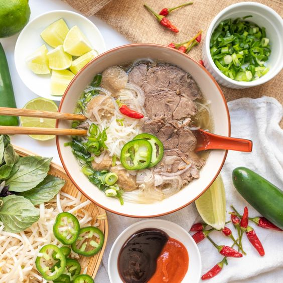
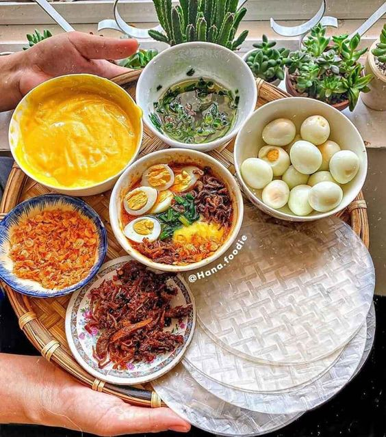
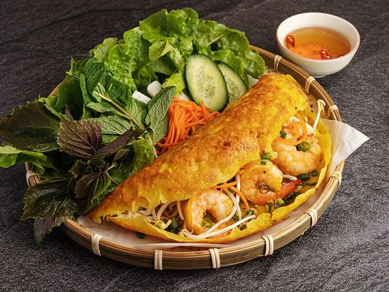
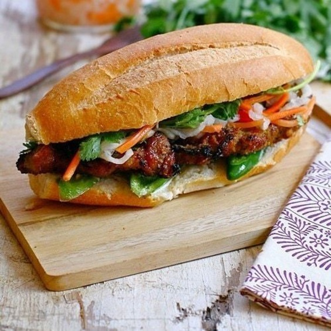
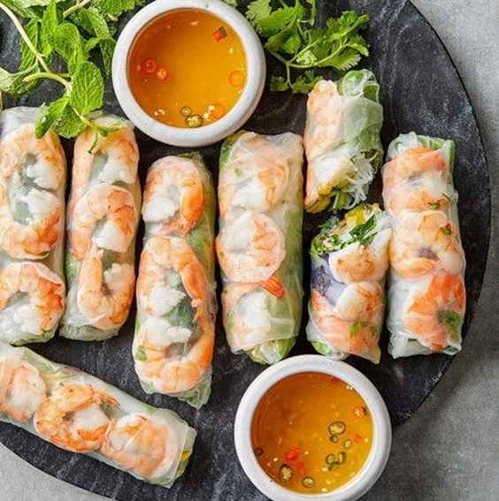
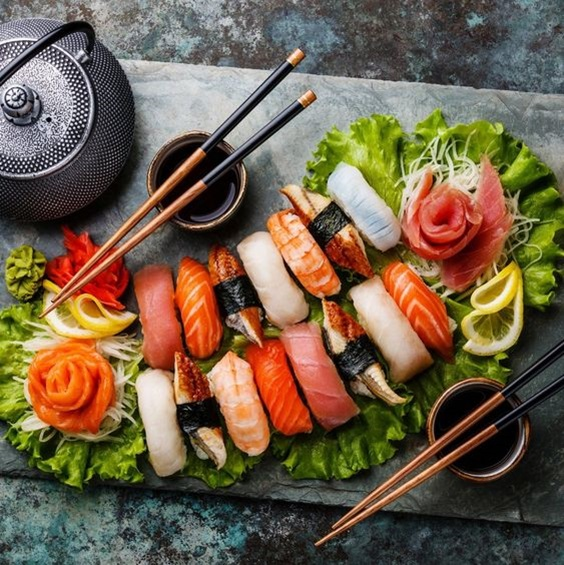

Cuisine - A place to connect with love
Cuisine is a bridge of love, connecting people through delicious food and warm sharing moments.

Beef pho
Beef pho is a Vietnamese noodle soup consisting of a flavorful broth, flat rice noodles called bánh phở, a
few slices of beef (rare or well-done),
herbs, and spices. It is considered the national dish of Vietnam and is served in a variety of restaurants
and street stalls throughout the country.
The broth is the key to a good phở bò and is typically made by simmering beef bones and marrow for several
hours. The resulting broth is rich, flavorful,
and slightly sweet. The bánh phở are made from rice flour and are thin, flat, and delicate. They are cooked
in boiling water for a few minutes until they
are soft and chewy.The beef is typically sliced thinly and is either served rare or well-done. The herbs and
spices that are added to phở bò vary depending
on the region, but typically include mint, basil, cilantro, bean sprouts, lime wedges, and chili peppers.Phở
bò is a delicious and satisfying dish that
is perfect for a quick and easy meal. It is also a great way to experience the flavors of Vietnamese
cuisine.

Bánh tráng
Bánh tráng is a type of Vietnamese rice cracker that is made from a thin, round sheet of rice flour and
water. It is a popular snack food in Vietnam and is often served with other dishes such as spring rolls, goi
cuon, and banh mi. Bánh tráng is also used as an ingredient in many Vietnamese dishes, such as cha gio
(fried spring rolls) and nem nuong (grilled pork patties). It can be eaten plain or dipped in a variety of
sauces, such as nuoc mam (fish sauce), nuoc mam chua (sweet fish sauce), and peanut sauce. Bánh tráng is a
versatile and delicious food that can be enjoyed in many different ways. It is a popular snack food in
Vietnam and is also used as an ingredient in many Vietnamese dishes. If you have never tried bánh tráng, I
encourage you to give it a try!

Banh Xeo
Banh Xeo is a crispy Vietnamese pancake made from rice flour, water, and turmeric. It is often filled with
savory ingredients such as pork, shrimp, and bean sprouts, and is served with a variety of fresh herbs and
dipping sauces. Banh Xeo is a popular street food in Vietnam and can be found at many restaurants and food
stalls. It is a delicious and affordable snack or meal that is sure to please everyone. Banh Xeo is a
versatile dish that can be enjoyed in many different ways. It can be eaten as a snack or a meal, and it can
be wrapped in rice paper with herbs and dipping sauce, or cut into small pieces and eaten with rice. Banh
xeo can also be added to salads or soups. It is a delicious and affordable snack or meal that is sure to
please everyone. Banh Xeo is a
versatile dish that can be enjoyed in many different ways. It can be eaten as a snack or a meal, and it can
be wrapped in rice paper with herbs and dipping sauce.

Bánh mì
Banh Mi is a popular Vietnamese sandwich that is made with a crispy baguette, savory fillings, and fresh
herbs. The baguette is typically filled with a variety of meats, such as pork, ham, or sausage, as well as
pate, pickled vegetables, and cilantro. Banh mi is often served with a dipping sauce, such as dipping sauce
or mayonnaise. Banh Mi is a delicious and affordable meal that can be found all over Vietnam. It is a
popular choice for breakfast, lunch, or dinner. Banh mi can also be found in many other countries around the
world, where it has become a popular Vietnamese street food. Here are some additional details about banh mi:
The name banh mi means "bread" in Vietnamese.
Banh Mi is thought to have originated in the early 20th century, when the French introduced the baguette to
Vietnam.
Banh mi is a popular food in Vietnam because it is a convenient and affordable way to get a delicious and
nutritious meal.

Gỏi cuốn
Goi cuon, also known as summer rolls or fresh spring rolls, is a popular Vietnamese dish made with various
ingredients such as pork, shrimp, vegetables, and herbs, all wrapped in a thin rice paper. It is a
refreshing and healthy dish that is perfect for a hot day.
Here are some additional details about goi cuon:
The name goi cuon means "salad roll" in Vietnamese.
Goi cuon is typically made with a variety of vegetables, such as lettuce, mint, basil, and cucumber.
The vegetables are often julienned or thinly sliced.
The pork and shrimp are usually cooked before being added to the goi cuon.
Goi cuon is often served with a dipping sauce, such as Vietnamese dipping sauce, fish sauce, or peanut
sauce.
Goi cuon is a popular dish to eat during the Lunar New Year holiday in Vietnam.

Sushi
Sushi is a Japanese dish of prepared vinegared rice combined with other ingredients, such as seafood,
vegetables, and sometimes tropical fruits. Styles of sushi and its presentation vary widely, but the one key
ingredient is "sushi rice", also referred to as shari or sumeshi.
Sushi is a popular dish in Japan and is also enjoyed all over the world. It is often seen as a healthy and
delicious meal, and it can be a great way to get your daily dose of fish.
Here are some additional details about sushi:
The word "sushi" comes from the Japanese word "sushi", which means "sour rice".
Sushi is believed to have originated in Japan over 2,000 years ago.
There are many different types of sushi, but some of the most popular include nigiri, maki, and temaki.
Sushi is often served with soy sauce, wasabi, and pickled ginger.
Sushi is a popular dish to eat during celebrations and holidays in Japa